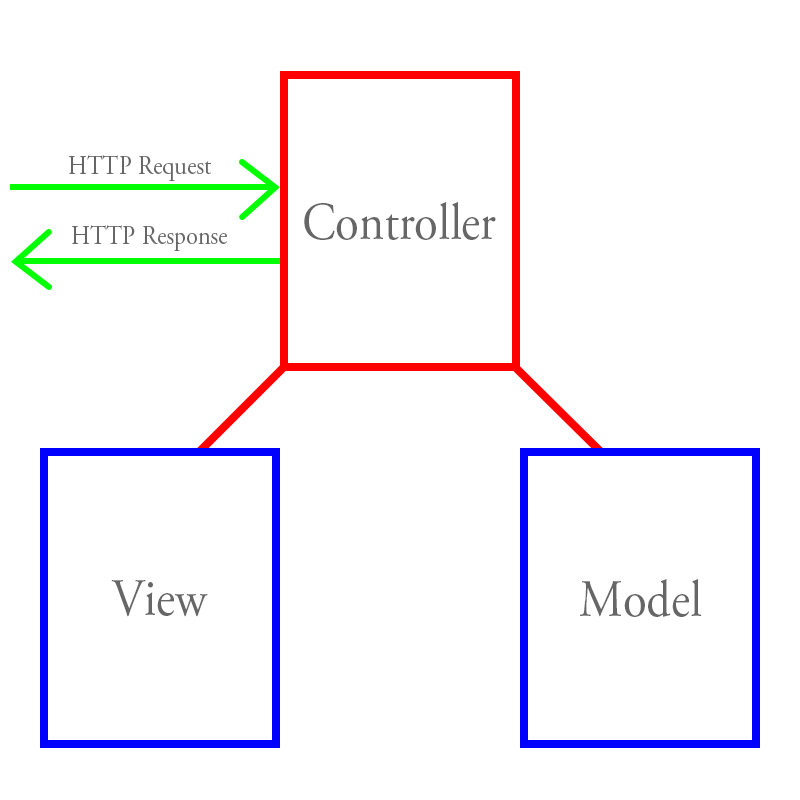

Index
- サーバーサイドMVC
- クライアントサイドMVW
- jQueryの役割
- MVWフレームワークが必要な理由
- AngularJSを選択する理由
- AngularJSのアーキテクチャ
- AngularJSのコーディング
サーバーサイドMVC (Model View Controller)

ロジックはコントローラーに集約される.
コントローラーの役割が強く, ほとんどのロジックがコントローラーに集約される.
クライアントサイドMVW (Model View Whatever)
ロジックはモデルに集約され, ロジックによるデータの更新はビューに反映される
コントローラの役割は弱く, ビューとモデルの役割が強い.
だから, MVCではなく, MVW (Whatever).
jQueryの役割
- 煩雑なDOM操作を抽象化する.
- ブラウザ間のAPIの違い (主にIE) を隠蔽する
jQueryのみでのコーディング
オブジェクト指向の機能をもたないので, 手続き的に記述せざる負えない.
ゆえに, 可読性の悪い煩雑なコードになる.
$(function() {
// jQueryの羅列 ....
// 可読性が悪い ...
// さらに, jQueryで動的にDOMを操作すると煩雑さが増す
$('button').on('click', function() { // .... });
$(':text').on('keyup', function() { // .... });
// ....
});
MVWフレームワークが必要な理由
- ちょっとしたUIを作成するだけであれば不要
-
Single Page Applicationでは, jQueryのみでは役不足.
-
モデルとビューの開発に注力する.
-
コントローラーにオブジェクト指向の機能をもたせる.
Single Page Application : 従来はサーバーサイドにあった多くの機能がクライアントサイドに移行している.
AngularJSを選択する理由
- Single Page Applicationに向いている (Backbone.jsはサイボウズなど大規模なクライアントサイドアプリケーション向き).
- DOM操作がほぼ不要になるので, デザインとの連携がしやすい.
- JSの次期仕様であるECMA the 6th Editionの機能を擬似的に実現している.
- Object.observe
- Promise
-
Web Components
- Shadow DOM
- Custom Elements
- HTML Templates
- HTML Imports
AngularJSのアーキテクチャ
- モデルが更新されれば, ビューが更新され, ビューが更新されればモデルが更新される (双方向データバインディング).
- モデルとビューの関係に注力して開発が可能.
- テンプレート機能によって, 煩雑なDOM操作が不要.
AngularJS Architecture
{kind=link}
{kind=link}
{kind=link}
{kind=link}